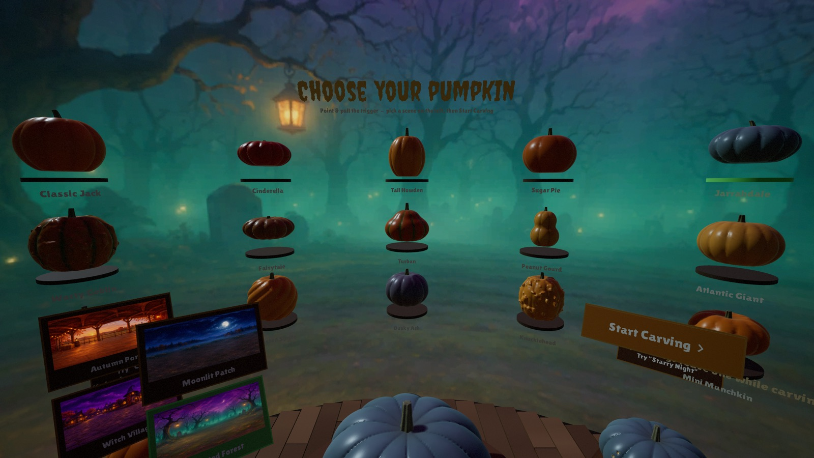
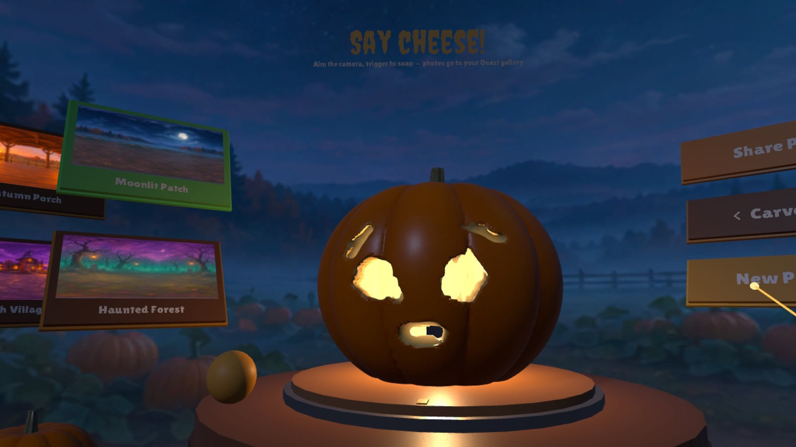
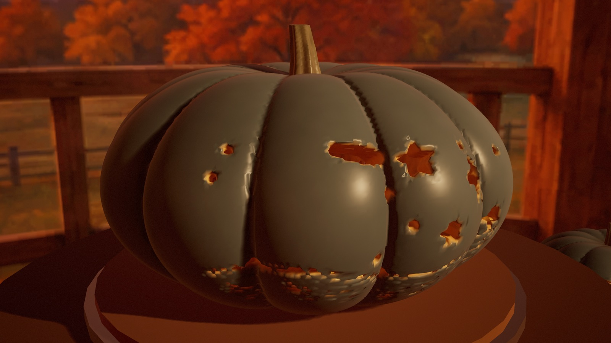
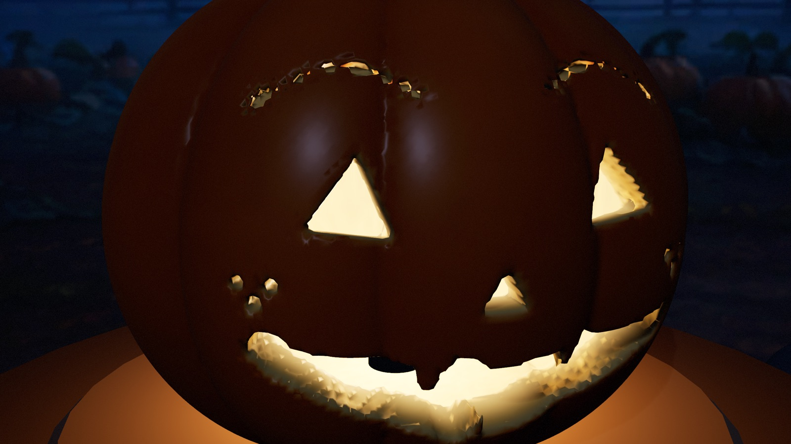
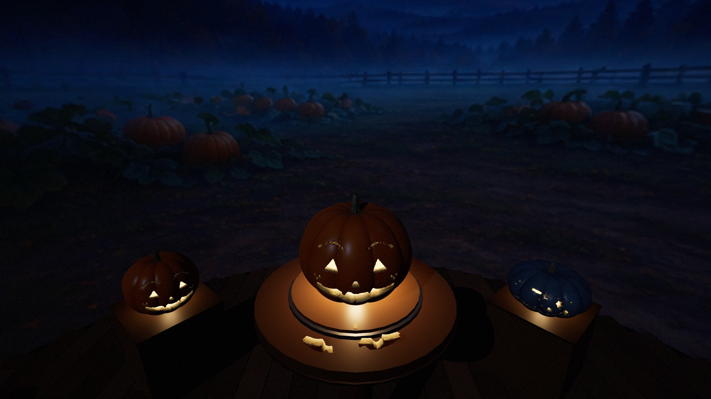

This was a weekend project: a small VR pumpkin carving game for Meta Quest (Quest 2, Pro, 3 and 3S), built in Unreal Engine 5.8 with C++. It's packaged as Carve-o-Lantern. Almost nothing in the scene is a hand-made asset. The pumpkins, the table, the menus and the candle are all built at runtime from code, and the pumpkin itself is a signed distance field (SDF) that you cut into with your hands.
In this post I'll explain what the game is, how it plays, and then go into the SDF carving and the candle glow, which were the fun parts.

The game
The whole game is one loop:
- Pick a pumpkin. There are 15 shapes: Classic Jack, Cinderella (flat, deep ribs), Tall Howden, Jarrahdale (slate blue), Warty Goblin, Turban, Peanut Gourd and others. You also pick a background: Moonlit Patch, Autumn Porch, Haunted Forest or Witch Village.
- Pick your tools. There are 25 tools and you choose which ones go on your belt.
- Carve. The pumpkin sits on a turntable. Pull the trigger to cut, A/B to switch tools, X to undo, grip or stick to spin the pumpkin, left stick to raise or lower the table.
- Place the candle. You carry a candle into the pumpkin and the world fades to night.
- Take a photo. A camera in your hand saves the result to the Quest gallery. Designs can also be saved and loaded again later.




Mechanics
The tools fall into three groups:
- Through-cutters: paring knife, chef's knife, keyhole saw, hand drill, melon baller, pin poker, square punch. These cut all the way through the wall.
- Depth-limited tools: skin peeler (3.5 mm), shaver (9 mm), deep scraper (16 mm), fine etcher, round gouge, V-gouge, flat chisel, ribbon loop, texture rake, bubble scoop. Each one stops at a fixed depth under the original skin, so you can do shaded "etched" designs without punching holes.
- Stamps: star, heart, moon, triangle, bat, diamond, ghost. Press the cutter against the skin and pull the trigger once.
A label above your hand shows which layer the tool tip is in (Skin, Rind, Flesh, Pulp or Through!) and the depth in millimetres. When a cut separates a piece from the rest of the pumpkin, that piece pops out and falls onto the table. Haptics and the scraping sound both follow how much material is being removed per second, so you can feel the difference between skimming the skin and digging in.
Here's a short clip of carving with the melon baller and the fine etcher:
Why an SDF
Carving is just subtraction, and subtraction is trivial with distance fields. If D is the pumpkin (negative inside) and T is the tool, the carved pumpkin is:
D' = max(D, -T)That one line gives you every tool shape, any orientation, and clean intersections between cuts. A depth limit, undo, saving, and detecting loose pieces all become simple once the pumpkin is a grid of numbers instead of a mesh.
The pumpkin SDF
Each pumpkin starts as an analytic function: a squashed sphere with ribs, dimples at the poles, and optional warts, twist, a turban top or a gourd neck. The ribs come from cos(phi * RibCount / 2) around the vertical axis, and they fade out toward the poles so the grooves meet nicely at the stem:
const float RXY = FMath::Sqrt(Q.X * Q.X + Q.Y * Q.Y);
float Z = Q.Z * (R / H);
const float DimpleFall = FMath::Exp(-FMath::Square(RXY / (0.36f * R)));
if (Z > 0.f) { Z += S.TopDimple * R * DimpleFall; }
const float Len = FMath::Sqrt(RXY * RXY + Z * Z);
const float Lat = RXY / FMath::Max(Len, 0.001f); // 0 at the poles, 1 at the equator
const float Phi = FMath::Atan2(Q.Y, Q.X);
const float C = FMath::Abs(FMath::Cos(Phi * S.RibCount * 0.5f));
const float GrooveF = 1.f - FMath::Pow(C, S.RibSharpness); // 0 on a lobe, 1 in a groove
float Reff = R * (1.f - S.RibDepth * GrooveF * FMath::Pow(Lat, 1.3f));
return (Len - Reff) * FMath::Min(1.f, H / R);Turban and gourd shapes are a second body blended in with a smooth min, and a plane cuts off the bottom so the pumpkin sits flat.
This function is only roughly a distance. The ribs stretch it a lot, and that matters because tool depth limits and wall thickness are in centimetres. So after sampling it into the grid, I divide every value by its gradient length to make it close to a real distance. Then I hollow it out into a shell:
// D0: the original outer skin, normalised so one unit is one cm
Norm[I] = D0[I] / FMath::Clamp(GradientLength, 0.5f, 4.f);
// D: the field you carve, a shell of thickness Wall
Grid.D[I] = FMath::Max(O, -(O + Wall));I keep two fields. D is what you carve. D0 is the untouched outer skin, and it never changes. With D0, any point knows how deep it is below the original surface, and that drives the depth-limited tools, the depth label, and the layer colours.
The grid is dense. For a carvable Classic Jack it's 115×115×93 points at 0.33 cm per voxel, around 150k triangles once meshed, and my logs show the whole build takes about 17 to 29 ms. The decorative pumpkins in the background use a coarser 0.9 to 1.4 cm grid and stay solid.
Tool SDFs
Every tool is an SDF in its own space: the tip is at the origin, the tool points along +X, and the handle extends back along -X. Spheres, cylinders, discs, boxes and cones are the standard primitives. The knife is a thin box with a slanted plane cutting its tip into a point. The rake is three spheres in a row.
The stamps are 2D SDFs pushed out into 3D. Star, heart, triangle, moon and rhombus are Inigo Quilez's 2D distance functions. The bat and the ghost I built by hand from circles and boxes. Intersecting the 2D shape with a slab gives you a cookie cutter:
const FVector2f Q(P.Y / T.Size, P.Z / T.Size);
float D2 = SdStar5(Q, 1.0f, 0.45f) * T.Size; // or heart, moon, bat, ghost...
const float X = FMath::Abs(P.X - T.Length * 0.5f + 0.5f) - T.Length * 0.5f - 0.5f;
return FMath::Max(D2, X); // 2D shape intersected with a slab = extrusionCarving
To apply a tool, I transform its local bounds into the pumpkin's grid space, then loop over only the grid points inside that box. Big boxes are split across Z slices with ParallelFor. For each point:
const FVector3f Pt = ShapeToTool.TransformPosition(Grid.PointPos(X, Y, Z));
float T = PumpkinSDF::Tool(Tool, Pt);
if (T > V) { continue; }
if (MaxDepth > 0.f)
{
// intersect the tool with a band under the ORIGINAL skin
T = FMath::Max(T, -Grid.D0[I] - MaxDepth);
}
const float NewD = FMath::Max(Grid.D[I], -T); // subtractionThe depth limit is the line that uses D0. -D0 - MaxDepth is positive deeper than MaxDepth below the original skin, so the tool simply stops existing past that depth. Push the peeler as hard as you like and it still only removes 3.5 mm.
Controllers move a long way between frames, so a single stamp per frame leaves gaps. Each frame I sweep the tool from last frame's transform to the current one, with enough sub-steps to cover both the distance moved and the rotation (capped at 16).
Meshing: surface nets in chunks
The grid is split into chunks of 24³ cells, and each chunk gets its own UProceduralMeshComponent. A carve marks the chunks it touched as dirty. Each tick, the dirty chunks (plus a one-voxel border) are copied out and meshed on the thread pool, and the finished meshes are uploaded on the game thread. Every chunk has a sequence number, so a slow result can never overwrite a newer one.
The mesher is surface nets, not marching cubes. Each cell that crosses the surface gets one vertex at the average of its edge crossings, and every edge crossing becomes a quad joining the four cells around it. It's simpler than marching cubes, has no lookup tables, and gives smoother, more even triangles, which helps a lot on a curved shape like this:
for (int32 E = 0; E < 12; ++E)
{
const float A = C[EdgeA[E]], B = C[EdgeB[E]];
if ((A < 0.f) != (B < 0.f))
{
Acc += FMath::Lerp(CornerOff[EdgeA[E]], CornerOff[EdgeB[E]], A / (A - B));
++Cnt;
}
}
const FVector3f Pos = G.Origin + (FVector3f(X, Y, Z) + Acc / float(Cnt)) * G.Voxel;Normals come straight from the SDF gradient across the cell's eight corners. There are no UVs and no textures. All colour goes into the vertex colours (more on that below).
Loose pieces, undo and saving
Falling pieces. When a through-cut finishes, I take a snapshot of which points are solid and run a flood fill on a worker thread, starting from the bottom rows of the grid. Any solid region the fill never reaches isn't attached to anything, so it has fallen out. Carving only ever removes material, so a piece found to be loose stays loose even if the player keeps cutting while the fill runs. Each loose region is erased from the grid, meshed on its own, and spawned as a small debris actor with a bit of hand-written physics: gravity, one bounce, then it rests on the table. If the region contains the stem, the stem goes with it.
Undo. At the first change to each chunk in a stroke, the chunk's values are saved. Undo writes them back. The last 12 strokes are kept.
Saving. A design stores only the grid points that differ from a fresh pumpkin, compressed with zlib. Since you rebuild the same pumpkin first and then apply the changes, the files stay small.
VFX: layers and the candle glow
The project runs on the Quest's mobile forward renderer with 4x MSAA, multiview, and no post-processing: no bloom, no Lumen, no distance fields, and no shadows from point lights. So the look of a glowing jack-o'-lantern has to be faked in the material, and the SDF makes that easy.
Layer colours
When the mesher creates a vertex, it samples D0 to find how deep that vertex is below the original skin, and blends through four layers:
const float W1 = FMath::SmoothStep(0.06f, 0.22f, Depth); // skin -> rind
const float W2 = FMath::SmoothStep(0.35f, 0.85f, Depth); // rind -> flesh
const float W3 = FMath::SmoothStep(S.Wall - 0.45f, S.Wall - 0.08f, Depth); // flesh -> pulp
FLinearColor C = FMath::Lerp(Skin, Rind, W1);
C = FMath::Lerp(C, Flesh, W2);
C = FMath::Lerp(C, Pulp, W3);
FColor Out = C.ToFColor(true);
Out.A = uint8(FMath::Clamp(FMath::RoundToInt(Sat(Depth / S.Wall) * 255.f), 0, 255));The skin colour also gets darker stripes along the rib grooves, a darker green crown around the stem, and a few layers of 3D value noise so no two pumpkins look painted.


Glow through thin walls
The important part is the alpha channel: it holds depth divided by wall thickness. The skin is 0, the inside of the cavity is 1, and a spot you've scraped thin is somewhere in between. The pumpkin material (generated by an editor Python script) is only a few nodes:
BaseColor = VertexColor.rgb ^ 2.2
Roughness = lerp(0.36, 0.6, saturate(VertexColor.a * 5)) // glossy skin, moist flesh
Emissive = VertexColor.a ^ 2.5 * CandleGlow * GlowColor * 1.8So the deeper you scrape, the more the surface glows once the candle is lit. That's a cheap stand-in for light shining through a thin wall. The inside of the pumpkin is at depth = wall, so it glows fully, and that's what you see through a cut-through hole. Scrapers and gouges give you the soft half-glow areas that real carvers get by thinning the wall. The power of 2.5 keeps the skin and the rind dark, so only properly scraped areas light up.


The candle and the night fade
The candle is a few cylinders for the wax and wick, two spheres for the flame (an orange outer one and a yellow inner one) using an additive fresnel material, and one small point light with no shadows. One noise value drives everything:
const float N = FMath::PerlinNoise1D(FlickerTime * 7.f) * 0.5f
+ FMath::PerlinNoise1D(FlickerTime * 17.f + 3.f) * 0.25f;
const float Flicker = FMath::Clamp(0.88f + N * 0.35f, 0.6f, 1.15f);
Pumpkin->SetCandleGlow(GlowAlpha * Flicker, kCandleColor); // material
PlacedCandleLight->SetIntensity(0.22f * Flicker * FMath::Max(GlowAlpha, 0.2f)); // lightThe same Flicker also stretches the flame spheres vertically. Because the material glow, the point light and the flame all move together, the pumpkin looks lit from inside even though no light actually passes through the wall.
When the candle goes in, the scene fades to night over a second or two: the sun drops to 22% of its strength, the sky light to 35%, the background sphere darkens, the glow fades in, and the music quietens a little. The pumpkins on display around the table each get their own flicker offset so they don't pulse together.


Wrapping up
For a weekend, an SDF was the right call. The core carving operation is a single max, and depth-limited tools, falling pieces, undo, small save files and the layered glow all came from keeping a second, untouched copy of the field next to the one you carve. The rest was making it run on a Quest: chunked async remeshing, tight tool bounds, and doing all the lighting work in vertex colours and one emissive term instead of real light transport.